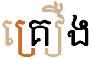
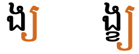
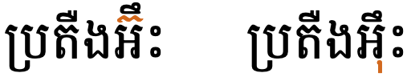

This page brings together basic information about the Khmer script and its use for the Cambodian language. It aims to provide a brief, descriptive summary of the modern, printed orthography and typographic features, and to advise how to write Khmer using Unicode.
The level of detail in the phonetic transcriptions shown below may vary according to the source. The transcriptions are generally intended to merely give an idea of the pronunciation.
The Khmer script is used for writing the official language of Cambodia, and sometimes for Cambodian minority languages, such as Tampuan, Krung, Cham, Brao and Mnong. It is currently in widespread use, although it is estimated that 35% of the Khmer-speaking population aged 15 and over are illiterate in the script. It is also used to write Pali in the Buddhist liturgy of Cambodia and Thailand.
អក្សរខ្មែរʔaʔsɑː kʰmaːeKhmer script
The script is thought to be descended from the Brahmi Pallava script, and the Khmer literary tradition dates back to the 7th century. The modern Khmer script differs somewhat from precedent forms seen on the inscriptions of the ruins of Angkor. The Thai and Lao scripts are descended from an older form of the Khmer script.
The script is an abugida, ie. like most Brahmi-influenced scripts, each consonant carries with it an inherent vowel. The sound following a consonant can be modified by attaching vowel signs to the consonant when writing. See the table to the right for a brief overview of features for the modern Khmer orthography.
Khmer text runs left to right in horizontal lines.
Words are not separated by spaces, however words may be separated by ZWSP. Spaces are used as phrase separators.
Each onset consonant is associated with a high or low class related to pronunciation (there is no tone). Khmer has more vowel sounds than ways to write them, so the choice of consonant class indicates different sounds for the same written vowel. Other factors may also affect the sound, such as stress, vowel harmony, and diacritics.
Word-internal clusters are very common at the beginning of a word, but clusters also occur medially in multisyllable words, and occasionally at the end of a word (though the 2nd consonant at the word end is usually not pronounced). Clusters are indicated by stacked consonants. Subjoined forms are created using an invisible coeng character. Stacks do not span word boundaries.
Word-final consonant sounds (typically 8 consonants and characters) use ordinary code points without an inherent vowel. Because there are no spaces or other word dividers, it is difficult to detect boundaries algorithmically. Two word-final sounds (m and h) can be produced using combining marks.
The Khmer orthography has 2 inherent vowels (for example, using the two symbols for the sound k, ក is kɑːneck, and គ is kɔːmute.), and represents vowels using 17 vowel-signs (including 3 prescripts and 5 circumgraphs, 2 of which can decompose into composite vowels), and 8 consonants or diacritics. All vowel-signs are combining marks, and are stored after the base character.
Khmer has more vowel sounds than ways to write them. Therefore, a written vowel can have different pronunciations, depending on the class of the base consonant. (There is no tone in Khmer, so classes are specially designed for vowel selection.) Additional factors include whether this is an unstressed vowel, vowel harmony, and whether any of the special diacritics have been used to change the sound. For an in-depth treatment of pronunciation see Huffman in the sources section.
There is an incomplete set of independent vowels, and standalone vowel sounds are typically written using vowel-signs applied to អ [U+17A2 KHMER LETTER QA].
This page lists 15 composite vowels (made from 9 vowel signs, and 8 consonants/diacritics), not counting decompositions. Composite vowels can involve up to 3 glyphs, but only surround the base consonant(s) on 2 sides, eg. កោះkoh̽.
Modern Khmer has a number of distinct writing styles, including slanted (called អក្សរច្រៀង), which has an upright variant, and round (called អក្សរឈរ). The round style includes more ligated forms. The upright style is used here. For examples, see writing_styles.
Click on the sounds to see where else in the document they are referred to.
Phones in a lighter colour are non-native or allophones. Source Wikipedia.
Vowel sounds
Plain vowels
Front
Central
Back
Close
i iː
ɨ ɨː
u uː
Close-mid
e eː
ə əː
o oː
Open-mid
ɛː
ɔː
Open
a aː
ɑ ɑː
Diphthongs
Front
Central
Back
Close
iə
ɨə
uə ŭə
Close-mid
ei ĕə
əɨ
ou ŏə
Open-mid
ɔə
Open
ae aə ao
Consonant sounds
labial
dental
alveolar
retroflex
palatal
velar
glottal
stop
pɓ~b pʰ
tɗ~d tʰ
c cʰ
kɡ kʰ
ʔ
affricate
fricative
f
sz
h
nasal
m
n
ɲ
ŋ
approximant
ʋ~w
l
j
trill/flap
r
Labial
Dental
Alveolar
Palatal
Velar
Glottal
Stop
p pʰ ɓ~b
ttʰ ɗ~d
c cʰ
k kʰ
ʔ
Affricate
Fricative
s
h
Nasal
m
n
ɲ
ŋ
Approximant
ʋ~w
l
j
Trill/flap
r
Structure
The syllable is fundamental in Cambodian.
Many native Cambodian words are monosyllabic. These start with one or more consonants or an independent vowel (or a vowel sign attached to ʔɑː, which is a combination of both). Short vowels in stressed syllables are always followed by a consonant. Long vowels may not be. There are many monosyllabic words that begin with consonant clusters, and some monosyllabic words that end with clusters, although only one consonant is pronounced in syllable final position.
There are also many bisyllabic words. In many cases the first syllable in a bisyllabic word is unstressed, and the vowel is usually rendered in colloquial speech as a schwa. Some bisyllabic words are compounds, however, and this may not apply.
Polysyllabic words are usually of Sanskrit, Pali or French origin. These words tend to alternate stress across their syllables, but may not.
Order of syllable components
An orthographic syllable is slightly different from a morphological syllable, since an orthographic syllable may begin with the final consonant of the previous morphological syllable. Alternatively, an orthographic syllable may be just a final consonant or consonant cluster in a morphological syllable.
Components of an 'orthographic syllable'* should be composed in the following order:
base consonant or independent vowel
rɔɓaːt
museʔkətoə̯n or trəisaɓ (register shifters)
subscript (consonant or independent vowel)
vowel sign
zero-width joiner or non-joiner
any other mark
This fixed ordering makes it easier to search for and collate text. For more details, see this SIL document.sil
As mentioned above, although all combining characters follow the base in memory, the visual order of syllable components may not follow a linear progression from left to right. In the following example the order in which the glyphs are pronounced is far left, far right, down, left, left: កន្ត្រៃ In the word ច្រៀង the spoken order of the separate visible parts, numbered left to right, is 3,2, 1+4, 5, Some vowel signs span two or three sides of the base consonant or cluster.
Vowels
Dashes are used to indicate whether the character represents a vowel sound in a closed or an open syllable.
Click on the characters in the lists for detailed information. For a mapping of sounds to graphemes see vowel_mappings.
Vowel harmony
In two-syllable words, where the second syllable begins with one of the following consonants the vowel class of the second syllable is the same as that of the first.
ង␣ញ␣ណ␣ន␣ម␣យ␣ឡ␣ល␣រ␣វ
For example, in ប្រយ័ត្ន the second syllable starts with an oː class consonant but the class of the preceding syllable turns the vowel to an ɑː class sound. There are, however, exceptions to this rule.
Inherent vowels
Consonants carry an inherent vowel usually transcribed as a but pronounced as either ɑː or ɔː. The class of the consonant will initially dictate which sound is appropriate, eg. ក [U+1780 KHMER LETTER KA] (an ɑː class consonant) is pronounced kɑː whereas គ [U+1782 KHMER LETTER KO] (an ɔː class consonant) is pronounced kɔː.
An orthography that uses vowel-signs is different from one that uses simple diacritics or letters for vowels in that the vowel-signs are generally attached to the syllable, rather than just applied to the letter of the immediately preceding consonant. This means that pre-base vowel-signs and the left glyph of circumgraphs appears before a whole consonant cluster if it is rendered as a conjunct (see prescript_vowels).
Khmer vowel-signs are all combining characters. All vowel-signs are stored after the base consonant, and the glyph rendering system takes care of the positioning at display time. This also applies for the 5 circumgraphs, where a single code point produces glyphs on more than one side of the consonant base.
Around half the vowel-signs are spacing marks, meaning that they consume horizontal space when added to a base consonant.
Combining marks used for vowels
Khmer uses the following dedicated combining marks for vowels. They may be used on their own, or in combination with others (see composite_vowels). A few vowel signs are combined with niʔkəhət or reə̆hmuk diacritics to produce additional sounds (see anusvara_visarga), and some consonants are pronounced as vowels in certain contexts.
ៈ [U+17C8 KHMER SIGN YUUKALEAPINTU] is a 20th century addition to the Khmer repertoire. It is used as a vowel after consonants that are pronounced as stressed syllables at the end of a word, or preceding an internal juncture in compounds.
In the âksâr mul font style, some vowels form ligatures with their base consonants. See vowel_ligatures.
Pre-base vowel-signs
េ␣ែ␣ៃ
Three vowel-signs appear to the left of the onset consonant, eg. សេះ
These are combining marks that are always stored after the base consonant. The glyph rendering system places the glyph before the base consonant.
These vowel-signs are placed before the start of the orthographic syllable. This means that a word with a consonant cluster visually separates the pre-base vowel from the position where it is pronounced by more than one consonant character, eg.
ម្ដេចអង្គ្លេស
Circumgraphs
ៀ␣ឿ␣ើ␣ោ␣ៅ
Five vowels are produced by a single combining character with visually separate parts, that appear on different (mostly opposite) sides of the consonant onset.
These are also combining marks that are always stored after the base consonant. The font places the glyphs in the right place relative to the base consonant.

A circumgraph vowel-sign (in the light colour), surrounding both the k and the r (midtone colour) after which it is pronounced in the word គ្រឿង.
The descendants of the anusvara and the visarga, ំ [U+17C6 KHMER SIGN NIKAHIT], called និគ្គហិតniʔkəhət, and ះ [U+17C7 KHMER SIGN REAHMUK], called រះមុខreə̆hmuk, are regarded as vowels in Khmer, even though they represent the sounds m and h, respectively.
Used on their own, they can change the inherent vowel, affecting both the pronunciation and the meaning. For example, compare niʔkəhət used alone ដមដំ and used with ា [U+17B6 KHMER VOWEL SIGN AA]u,643ពាមពាំ
They are also used in combination with other vowel signs.
ាំ␣ុំ␣ុះ␣េះ␣ោះ
The first two of these combinations are regarded as vowels in the Khmer alphabet but they are not encoded separately in Unicode (though they are named sequences), ie. អាំam oə̆m and អុំom um.
Consonants used for vowels
Vowel-signs may sometimes be combined with other characters to represent a particular vowel sound. In addition to niʔkəhət and reə̆hmuk, these include the following:
ង␣វ␣រ␣យ
See composite_vowels for the few instances where these are used.
Vowel modifier marks
័␣់
់ [U+17CB KHMER SIGN BANTOC] is always placed above the final consonant, and basically shortens the preceding vowel.
័ [U+17D0 KHMER SIGN SAMYOK SANNYA] is used in some Pali and Sanskrit loan words (although alternative spellings exist) and indicates that the syllable has a particular vowel (click on the name just above for more details).
Composite vowels
Vowels represented by combinations of the above characters (not including the decomposed versions of the 2 circumgraphs mentioned earlier):
ាំ␣ុំ␣ុះ␣េះ␣ោះ␣ា␣ាំង␣ិះ␣ឹះ␣ូវ␣ើះ␣ែះ␣័រ␣ិយ␣័យShow which combinations contain a given character:
ា
ា់␣ាំង␣ាំ
ិ
ិយ␣ិះ
ឹ
ឹះ
ុ
ុះ␣ុំ
ូ
ូវ
ើ
ើះ
េ
េះ
ែ
ែះ
ោ
ោះ
ំ
ុំ␣ាំង␣ាំ
ះ
ោះ␣ិះ␣េះ␣ុះ␣ែះ␣ឹះ␣ើះ
់
ា់
័
័យ␣័រ
យ
ិយ␣័យ
ង
ាំង
រ
័រ
វ
ូវ
Show details about vowel glyph positioning.
The following list shows where vowel-signs are positioned around a base consonant to produce vowels, and how many instances of that pattern there are. The figure after the + sign represents combinations of vowel-sign and niʔkəhət/reə̆hmuk,
3 prescript, eg. កេke
2+1 postscript, eg. កាkā
4+1 superscript, eg. កិki
3 subscript, eg. កុku
4+1 pre+postscript, eg. កោko
1+1 super+postscript, eg. កាំkām̽
0+1 super+subscript, ie. កុំkum̽
0+1 sub+postscript, ie. កុះkuh̽
0+1 pre+post+postscript, ie. កោះkoh̽
At maximum, vowel components can occur concurrently on 2 sides of the base.
Characters that don't appear in the combinations:
ី␣ឺ␣ួ␣ឿ␣ៀ␣ៃ␣ៈ␣ៅ
Standalone vowels
There are two ways of representing vowel sounds that are not preceded by a consonant.
The most common way is to add a vowel-sign to the glottal consonant character អ[U+17A2 KHMER LETTER QA], eg. អីʔəj.
Independent vowels
ឥ␣ឦ␣ឪ␣ឧ␣ឩ␣ឯ␣ឰ␣ឱ␣ឳ␣ឲ
There are also some independent vowel letters, but unlike most South Asian scripts, there are fewer independent vowels than vowel signs, and some do not have direct correspondences with a vowel sign, eg. ឪ corresponds phonetically to the vowel plus consonant combination ូវ. (See also vocalics.)
Whether an standalone vowel sound is represented using an independent vowel letter or the glottal consonant plus vowel-sign varies from word to word. In Cambodian orthography the two are not interchangeable. The independent vowel letters appear in relatively few words, but some of those words are quite common, eg. ឪពុកឲ្យឮ
Other characters
The Unicode Khmer block contains 3 more independent vowels that are either obsolete or strong deprecated.
ឨ
The Unicode Standard regards the following 2 characters as errors in the encoding.
ឣ␣ឤ
Silent vowels & consonants
Inherent vowels are not pronounced after syllable final consonants.
Khmer also has some diacritics that silence vowels or parts of the text.
្␣៍៑␣៌␣៝
Vowels are not pronounced between stacked consonants. The first character in the lists above, ្ [U+17D2 KHMER SIGN COENG], is used to create those consonant stacks. It is never visible. See clusters.
Two diacritics, ៌ [U+17CC KHMER SIGN ROBAT] and ៍ [U+17CD KHMER SIGN TOANDAKHIAT], are used to silence written characters. The former is not very common and silences final consonants, eg. បរិបូណ៌ (although it also introduces or affects sound in some cases in multisyllabic words). The latter is used over a consonant, particularly in loan words, to silence it and any attached vowels or subscripts, eg. សប្ដាហ៍រេហ៍ពល
៑ [U+17D1 KHMER SIGN VIRIAM], the sanskrit virama, is sometimes used in Sanskrit words to indicate that a final consonant has no vowel sound, eg. អាត្មន៑
៝ [U+17DD KHMER SIGN ATTHACAN], on the other hand, is a rarely used sign that indicates that a final consonant retains its inherent vowel sound.
Vowel sounds mapped to characters
The following tables show how the above vowel sounds map to characters or sequences of characters. The dotted circle indicates the location of the consonant relative to the vowel-sign; if there are 2 circles, the vowel is used only in closed syllables.
Plain vowels
i
2
ិ [U+17B7 KHMER VOWEL SIGN I]. Followed by glottal stop in stressed syllables, eg. លទ្ធិ, but not in unstressed, eg. និទាន.
Khmer represents vocalics only as independent vowel letters.
ឫ␣ឬ␣ឭ␣ឮ
Consonants
Click on the characters in the lists for detailed information. For a mapping of sounds to graphemes see consonant_mappings.
Consonant registers
Khmer is not tonal, but each consonant character belongs to one of two classes. The class of a consonant determines the vowel sound in a syllable. For example, compareកkɑːគkɔːand កីkəjគីkiː
៉␣៊
Two diacritics, ៉[U+17C9 KHMER SIGN MUUSIKATOAN] and ៊[U+17CA KHMER SIGN TRIISAP], are used to change the class of a consonant. These are particularly useful when a given sound has only one character associated with it, such as the letters ម, យ and ស etc.
Each of these diacritics should be typed and stored immediately after the base character (unless there is a ZWNJ, as described in consonant_shift_posn).u,647
Basic consonants
This shows consonants in use in modern Khmer, although some are not widely used.
The 2 registers are shown separately for the plosives, and the remainder are mixed. A superscript ɑ or ɔ indicates which register the consonant belongs to. Where pronunciation differs, forms such as p- indicate the sound at the start of a consonant cluster, and -p at the end of a syllable.
Stops
ɑː class
ផ␣ប␣ត␣ថ␣ឋ␣ដ␣ច␣ឆ␣ក␣ខ␣អ
ɔː class
ព␣ភ␣ទ␣ធ␣ឍ␣ឌ␣ជ␣ឈ␣គ␣ឃ
Fricatives
វ␣ស␣ហ
Nasals
ម␣ន␣ណ␣ញ␣ង
Liquids
រ␣ឡ␣ល␣យ
The following 3 consonants are obsolete, and used only for Pali/Sanskrit transliteration.
ឝ␣ឞ␣ៜ
Final consonants
Not all Khmer consonants can appear in syllable-final position. The most common syllable-final consonants include the following:
ប␣ត␣ក␣ម␣ន␣ញ␣ង␣ល
The pronunciation of the consonant in final position may differ from it's normal pronunciation, but it is not followed by a vowel sound.
Because ordinary letters are used in word-final position, it is difficult to parse Khmer. For example, the sequence កក could equally represent two syllables kɑːkɑː with inherent vowels, or one syllable with a final -k sound kɑːʔ.
Two final consonant sounds m and h can also be produced using combining characters. See anusvara_visarga for details.
Consonant clusters
In Khmer, word-internal clusters are very common at the beginning of a word, but clusters also occur medially in multisyllable words, and occasionally at the end of a word.
The absence of a vowel sound between two or more consonants is visually indicated by stacked consonants (only), where the non-initial consonant appears below the initial, typically with a different shape from normal.
In Unicode, the stacking behaviour is achieved by adding ្ [U+17D2 KHMER SIGN COENG] between the consonants. This character has no visual representation.
Word boundaries. Clusters do not span word boundaries. Consonant clusters formed by the end of one word and the beginning of the next do not lead to stacking in Khmer.
Stacking
្
Subscript consonant forms are called ជើងអក្សរ (or 'coeng', pronounced cəːŋ).
Cambodians see these subscripts as distinct letter forms, but, unlike Tibetan, they are produced in Unicode by inserting ្ [U+17D2 KHMER SIGN COENG] before the consonant that will become a subscript. This character, which has no visual form in Cambodian, is called the coeng in Unicode, although it should rightly be called the coeng generator.
All the shapes are simplified and reduced in size compared to the non-subscript form. Many have significantly different shapes.
This list shows consonants in their normal and subjoined forms
រ [U+179A KHMER LETTER RO] produces a subjoined form that wraps to the left and under the preceding consonant. Several others wrap below and to the right of the consonant. ឡ [U+17A1 KHMER LETTER LA] doesn't normally appear in subscript form.
Where the two consonants involved in the cluster are in different classes or registers, the pronunciation of any following vowel is normally determined by the register of the subscript consonant. For the following exceptions, however, the vowel pronunciation is determined by the register of the first consonant:
ង␣ញ␣ន␣ម␣យ␣រ␣ល␣វ
Some subscripts change the sound of the preceding consonant.
Subscript consonants that appear at the end of a word, are silent, eg. ពេទ្យរដ្ឋ
In some multisyllabic words a medial cluster may contain a final consonant for the first syllable and the initial consonant of the next syllable, eg. កម្មករ
There are some clusters involving two subscripts. These are, with three exceptions, composed of a final nasal, followed by a stop and r, eg. កន្ត្រៃកញ្ជ្រេង The three exceptions are the loan words, អង្គ្លេសសងស្ក្រិត and សាស្ត្រាចារ្យ
Subscript consonants after vowels
It is rare but possible to find subscripts used after independent vowels. One common word spelled this way is ឲ្យ
It is also possible to find subscript forms of independent vowels. Four of these are named sequences in Unicode.
Consonant sounds to characters
The following maps Khmer consonant sounds to common graphemes, grouped by register (class 1 or 2).
For Khmer, single and multiple code point realisations do not normalise to be the same in NFC or NFD, so you are creating different content by using one approach or the other. This may affect various operations on the text, and it is therefore better to stick with one representation. The Unicode Standard surprisingly makes no comment on this, although it does for other scripts, where it encourages use of the precomposed, single code point.
Also, some fonts may not display the decomposed sequences correctly.
Other letters
In addition to those mentioned above, the Unicode Khmer block has one other character with a general category of letter.
This section brings together information about the following topics:
writing styles;
cursive text;
context-based shaping;
context-based positioning;
baselines, line height, etc.;
font styles;
case & other character transforms.
The Khmer script has no case distinction, and no special transforms are needed to convert between characters.
The script is not cursive (ie. joined up, like Arabic).
Writing styles
There are several distinct styles of font in Modern Khmer.
Most modern typefaces are set in an upright style (called អក្សរឈរʔk͓sṟc̱ʰṟʔɑːksɑː cʰɔː or អក្សរត្រង់ʔk͓sṟt͓ṟŋ˘ʔɑːksɑː trɑŋ).ws,#Styles This is the style used for this page.
The text អក្សរខ្មែរ in an âksâr chôr font style.
The slanted style (អក្សរជ្រៀងʔk͓sṟc̱͓ṟiᵊŋʔɑːksɑː criəŋ) is used for whole documents or novels. The oblique styling has no affect on the semantics of the text.ws,#Styles
The text អក្សរខ្មែ in an âksâr chriĕng font style.
The round style (អក្សរមូលʔk͓sṟm̱ūḻʔɑːksɑː muːl) includes more ligated forms, and is used for titles and headings in Cambodian documents, books, or currency, as well as on shop signs or banners. It may also be used to emphasise important names or nouns.ws,#Styles
The text អក្សរខ្មែ in an âksâr mul font style.
Another style (អក្សរខមʔk͓sṟkʰm̱ʔɑːksɑː kʰɑːm), characterized by sharper serifs and angles and retainment of some antique characteristics, is used for yantra text in Cambodia as well as in Thailand.ws,#Styles
Context-based shaping & positioning
This section mentions a handful of exceptions to the general rule that there is very little in the way of interaction between characters other than where the subscript shapes are used after the coeng generator.
Subjoined consonants can be quite different shapes from those of the corresponding base consonant, and those shapes can be seen in clusters. However, some additional reshaping of glyphs is needed to cope with stacking of characters. Compare for example the length of the final element fig_long_subjoined_yo.

The subjoined form of យ [U+1799 KHMER LETTER YO] is lengthened when it is the second subjoined consonant.
Joining forms for AA
Some small joining features occur in relation to ា[U+17B6 KHMER VOWEL SIGN AA] and similarly shaped vowels. Unicode provides the following list of common forms:
ក + ា = កា
ប + ា = បា (avoids confusion with ហ )
ប + ៅ = បៅ
្ស + ា = ្សា
Register-shifter position
The function of the register-shifter marks is described in register_changes.
The Unicode Standardu,647 gives the impression that both of these diacritics are moved below the consonant any time a vowel appears over that consonant. However, in reality only certain consonants cause this behaviour.
Observation: SIL and Noto fonts, as well as others, stack the diacritics above only certain consonants. The behaviour varies a little by font, but in general the diacritic is lowereed for the following 3 letters for TRIISAP: សហអand these letters for MUUSIKATOAN: បវមនញងរលយ
If needed, this behaviour can be modified using [U+200C ZERO WIDTH NON-JOINER], if the font recognises it, to prevent the low form appearing. The ZWNJ must be typed and stored between the base consonant and the register-shifter. See fig_zwnj_triisap for an example using ប្រតឺងអ៊ឹះ.

TRIISAP rendered above the consonant by using ZWNJ immediately before it (left), when it would otherwise be moved below the consonant (right).
NYO with subscripts
Another common feature is that ញ[U+1789 KHMER LETTER NYO] drops the swash below the baseline when followed by a subscript consonant, eg. បញ្ឆោត Also, when it appears as a subscript under itself it uses a special full form subscript. Compare កញ្ញាប្រាជ្ញា
Vowel ligatures
In the âksâr mul style, some vowel signs ligate with the consonant characters to which they are applied. See the word វិទូ in fig_vowel_ligatures.
The sound vi written as a ligature (left) and with no ligature (right) in the âksâr mul style.
Observation: This behaviour is font dependent. For example, the Khmer Mool font (used for the figure), and Khmer OS Muol produce the ligation, but the Khmer Ratanakiri font does not.
To prevent a ligature forming, use [U+200C ZERO WIDTH NON-JOINER] (ZWNJ) between the consonant and the vowel. To cause a ligature to form when there isn't one, if the font has the appropriate rules, use
[U+200D ZERO WIDTH JOINER] (ZWJ) instead.u,647
Font styles
tbd
Punctuation & inline features
Grapheme boundaries
tbd
Word boundaries
Khmer words are not separated by spaces, nevertheless Khmer should be wrapped at word boundaries.
Some other languages that use the Khmer script, such as Krung and Tampuan, do separate words with narrow spaces such as
[U+2006 SIX-PER-EM SPACE],
and separate phrases with a wider space such as
[U+2003 EM SPACE].sil,5
Space. Although Khmer words are not separated by spaces, the space (ឃ្លាkliə) is used, and is regarded as punctuation, similar to the comma. Huffman lists the following uses:
between clauses within a sentence
between sentences in a cohesive group of sentences
after preposed adverbial phrases, such as 'usually', 'today', 'in that town', etc.
before and after proper names
before and after numbers
before and after the symbols ។ and ៗ and the terms ។ល។ and ។ប។
between coordinate words in lists
Huffman gives the following example to show the use of the space:
ថ្ងៃនេះ ខ្ញុំទៅផ្សារ ទិញក្រច អង្ករ ហើយនឹងអីវ៉ាន់ផ្សេង ៗ tŋajnih kɲomtɨwpsaː tiɲkrouc ʔɑŋkɑː haəjnɨŋʔəjʋanpseiŋ pseiŋ Today ( ) I'm going to the market ( ) to buy oranges ( ) rice ( ) and various things.
As mentioned in word, some other languages use narrow spaces to separate words, and wide spaces, such as the EM SPACE, to separate phrases
Phrasal punctuation marks. Khmer also uses ។ [U+17D4 KHMER SIGN KHAN] to mark the end of sentences, although a series of sentences on a related topic tend to be separated by space instead.
Question & exclamation marks. Khmer uses Western punctuation marks, eg. ហេត៊អ្វី?haetʰ aʋəi, and កុំ!kom.
Very rarely, the combining character ៎ [U+17CE KHMER SIGN KAKABAT] can be used over the final consonant of a word like an exclamation mark, to convey excited emphasis, eg. ណែ៎nɛːHey!នុ៎ះន៎nuhnɔːOver there!
According to CLDR, the default quote marks for Khmer should be, reading right to left, “...”. When an additional quote is embedded within the first, the quote marks should be ‘...’.
Emphasis
៎
៎ [U+17CE KHMER SIGN KAKABAT] is very rare, but is used over the final consonant of a word like an exclamation mark, to convey excited emphasis, eg. ណែ៎នុ៎ះន៎
Abbreviation, ellipsis & repetition
Ellipsis
The word ។ល។ (pronounced laʔ) is used as the equivalent of 'etc.'
A character exists that represents that sequence, ៘ [U+17D8 KHMER SIGN BEYYAL], but the Unicode Standard deprecates it, and recommends the use of the three separate characters instead.u
៘
Other spellings for et cetera also exist. These include:
។បេ។
–បេ–
–ល–
Repetition
ៗ
It is common to repeat words or sometimes phrases in Khmer, particularly to provide emphasis. ៗ [U+17D7 KHMER SIGN LEK TOO] (called លេខទោleːktoː) can be used for this, eg. ខ្លាំង ៗklaŋklaŋvery strongគាត់មានផ្ទះថ្មី ៗkaːtʰ miən pʰteə̯h tʰməitʰməihe has a brand new house
Sometimes this sign repeats a phrase rather than a word, eg. បន្តិចម្ដង ៗɓɑntecmɗɑːŋ ɓɑntecmɗɑːŋlittle by little
It is also occasionally used to repeat the word at the end of a sentence for the beginning of a new sentenceh, eg. ខ្ញុំទៅផ្ទះខ្ញុំ ។ នៅជិតផ្សារkɲomtɨwpteə̆hkɲom pteə̆hkɲom nɨwcɨtpsaː
The sign is usually separated from the text by a space.
Inline notes & annotations
tbd
Other inline ranges
tbd
Other punctuation
Names
- [U+002D HYPHEN-MINUS] (called សហសញ្ញាsɑːhɑː sɑːɲɲiə) is used between the parts of a person's name. Typically the family name (written first) and following names, but often all names for Chinese Cambodians, eg. ញ៉ុក-ថែមɲok tʰaem, លី-ធាម-តេងliː tʰiəm teiŋ.
Line & paragraph layout
Line breaking & hyphenation
Although Khmer doesn't use spaces or dividers between words, the expectation is that line-breaks occur at word boundaries.
There are three basic types of Khmer word:
Single, indivisible words: eg. ជាតិc̱ātinationalវិទ្យាល័យv̱iṯ͓ȳāḻăȳhighschoolកម្មkm̱͓m̱mission
Words with prefixes and suffixes: eg. អន្តរជាតិʔṉ͓tṟc̱ātiinternationalមហវិទ្យាល័យm̱hv̱iṯ͓ȳāḻăȳhigh schoolកម្មករkm̱͓m̱kṟworkers
Compound words (combining 2, 3, or more single words): eg. ជាតិសាសន៍c̱ātisāsṉ˟raceកម្មផលkm̱͓m̱pʰḻkarmaសកលវិទ្យាល័យskḻv̱iṯ͓ȳāḻăȳuniversity
The first two types cannot be broken, but the third type can. For example, |ជាតិ|សាសន៍|, |កម្ម|ផល|, and |សកល|វិទ្យាល័យ|. (Hong)
Text is not broken at sub-word syllable boundaries. In fact, this is particularly difficult to do algorithmically in Khmer, because syllable-final consonants are indistinguishable from consonants with an inherent vowel that constitute a new syllable. Some kind of morphological analysis is needed.
You can experiment with counter styles using the Counter styles converter. Patterns for using these styles in CSS can be found in Ready-made Counter Styles, and we use the names of those patterns here to refer to the various styles.
The modern Khmer orthography uses numeric and alphabetic styles.
Numeric
The khmer numeric style is decimal-based and uses these digits.rmcs
០␣១␣២␣៣␣៤␣៥␣៦␣៧␣៨␣៩
Examples:
១␣២␣៣␣៤␣១១␣២២␣៣៣␣៤៤␣១១១␣២២២␣៣៣៣␣៤៤៤
Alphabetic
The cambodian-consonant alphabetic style for the Khmer language uses these letters.
List counters typically use a full stop+space as a suffix.
Examples:
ក. ខ. គ. ឃ. ង.
Separator for Cambodian list counters.
Styling initials
tbd
Page & book layout
This section is for any features that are specific to Khmer and that relate to the following topics:
general page layout & progression;
grids & tables;
notes, footnotes, etc;
forms & user interaction;
page numbering, running headers, etc.
Languages using the Khmer script
According to ScriptSource, the Khmer script is used for the following languages:


 [
[
 [
[ [
[ [
[ [
[